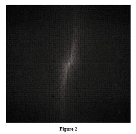

Torna alla pagina di Elaborazione delle Immagini
:: Appello d'esame di Elaborazione delle Immagini - 22/01/2007 ::
Esercizio 1
Guardando l’immagine mostrata in Figure 1 e il modulo della sua trasformata mostrato in Figure 2, commentare la distribuzione delle frequenze nello spettro.

Se avessimo ruotato di 90 gradi l’immagine cosa sarebbe accaduto al modulo della trasformata di Fourier?
SOLUZIONE
Notiamo che nell'immagine le variazioni di intensità più brusche si trovano sulla spiaggia, per via delle linee chiare e scure; sulla linea dell'orizzonte, per via della presenza di un'isola in lontananza e delle ombre molto scure sul mare; infine i contorni delle nuvole nel cielo. Per il resto sul mare e sul cielo l'immagine è abbastanza costante e le variazioni di intensità sono lievi.
Le componenti dello spettro, cioè la linea orizzontale e i due aloni verticali, sono influenzate proprio da questi cambiamenti di intensità dell'orizzonte e della spiaggia. Da notare l'angolo dei due aloni verticali (rispetto all'asse verticale) e quello delle linee presenti sulla spiaggia (rispetto all'asse orizzontale).
Ricordiamo che allontanandosi dall'origine le frequenza più basse corrispondono alle componenti di intensità di un'immagine che variano lentamente (ex: pareti, pavimento, cielo), mentre allontanandosi ancora di più dall'origine le frequenza più alte corrispondono a variazioni di intensità sempre più veloci nell'immagine (ex: contorni degli oggetti).
Questo ci interessa perché lo spettro contiene tutte le informazioni riguardanti le intensità dell'immagine, quindi fornisce le linee guida generali per stilare le caratteristiche dell'immagine di partenza.
Per via delle caratteristiche della Trasformata Discreta di Fourier, la rotazione di f(x,y) di un angolo θ comporta una rotazione dello spettro dello stesso angolo. Quindi se l'immagine fosse stata ruotata di 90° anche lo spettro sarebbe ruotato di 90°, quindi con la riga bianca verticale e le "nuvole" bianche orizzontali.
Da ricordare che lo spettro, a differenza della rotazione, è insensibile alla traslazione dell'immagine.
Esercizio 2
Data l’immagine rappresentata in Figure 3, calcolarne:
- l’istogramma;
- il valore medio
- la probabilità dei livelli di grigio
- l’entropia di primo ordine e quella di secondo ordine
SOLUZIONE
1- Ci sono:
- 10 livelli di intensità 1
- 4 livelli di intensità 4
- 2 livello di intensità 15
Ricordiamo che l'istogramma di un'immagine digitale con livelli di intensità nella gamma [0, L-1] è una funzione discreta h(rk)=nk dove rk è il valore d'intensità k-esimo ed nk è il numero di pixel dell'immagine con intensità rk.
2- il valore medio lo calcolo sommando i valori delle intensità diviso il numero di pixel, cioè MN con M righe e N colonne.
Nel nostro caso avremo:
((10*1)+(4*4)+(15*2))/16 = 3.5
3- La probabilità dei livelli di intensità è: p(rk)=nk/MN dove M e N sono le dimensioni dell'immagine.
Nel nostro caso avremo che:
l'immagine è una 4X4 e quindi le probabilità sono:
p(1): 10/16 = 5/8 = 0.625
p(4): 4/16 = 1/4 = 0.25
p(15): 2/16 = 1/8 = 0.125
4- L'entropia è l'informazione media della sorgente di intensità immaginaria in bit, detto in parole umane la quantità media di informazione presa dalla sorgente.
Il rapporto tra l'entropia e la quantità di informazione visiva è tutt'altro che intuitivo. Cioè ci possono essere delle immagini che sembrano avere pochissima informazione visiva, ma allo stesso tempo avere un'alta entropia.
L'entropia di primo ordine si calcola tramite la seguente formula:

dove pr è la probabilità dell'occorrenza del livello di intensità rk in una immagine.
Quindi nel nostro caso avremo:
- [0.625 * log2 0.625 + 0.25 * log2 0.25 + 0.125 * log2 0.125] =
- [0.625 * (-0.6781) + 0.25 * (-2) + 0.125 * (-3)] =
1.2988 bit/pixel
Esercizio 3
Spiegare che cosa si intende per “Intensity Slicing” di una immagine e quali sono le sue possibili applicazioni. Illustrare inoltre la sua versione a colori denominata ‘Color Slicing’.
SOLUZIONE
L'Intensity Slicing è un processo che permette di fare una selezione dei livelli di intensità utilizzando due metodi principali:
- andando a visualizzare con un valore (esempio bianco) tutti i valori della gamma di interesse e con un altro (nero) tutte le altre intensità.
- utilizzare una trasformazione che rende piu' chiari (o scuri) i valori della gamma desiderata e lascia invariati tutti gli altri livelli di intensita'.
Il Color Slicing è lo stesso concetto però applicato ai colori; questo procedimento fa parte dell'elaborazione di immagini a falsi colori. Infatti come nel caso dell'immagine in b/n evidenziare una gamma specifica di colori risulta utile per separare gli oggetti da ciò che li circonda.
L'idea e' quella di visualizzare i colori di interesse in modo che emergano dallo sfondo ed utilizzare la regione definita dai colori come maschera per ulteriori elaborazioni.
Ovviamente le trasformazioni a colori sono più complicate delle loro controparti in scala di grigio.
Un metodo semplice per ripartire un'immagine a colori e' trasformare i colori al di fuori della gamma di interesse in un colore neutrale non promittente.
Queste elaborazione vengono utilizzate ad esempio nei settori nei quali è necessaria la visualizzazione e interpretazione umana di più immagini in sequenza, oppure in applicazioni di videosorveglianza dove vogliamo far risaltare determinati oggetti o materiali.
Esercizio 4
Data l’immagine della Figure 5:
- Filtrarla con il filtro rappresentato nella Figure 6.
- Di che filtro si tratta?
- Cosa si ottiene filtrando l’immagine?
SOLUZIONE
1- filtrando l'immagine otteniamo:
11 18 11 2
12 20 12 2
11 18 11 2
5 8 5 1
2- è un filtro di media 2x2 con tutti i coefficienti uguali (abbiamo sempre visto filtri di media 3x3 però non penso che possa essere altro)
3- il filtro di media è un filtro lineare di smoothing che permette di:
- sfocare l'immagine, facendo risaltare gli oggetti di interesse;
- eliminare le transizioni di intensità brusche, che spesso sono associate al rumore;
- eliminare i falsi contorni;
- ridurre i dettagli irrilevanti;
In generale questi filtri sostituiscono il valore di ogni pixel con la media dei livelli di intensità nella regione definita dalla maschera del filtro.
Torna alla pagina di Elaborazione delle Immagini